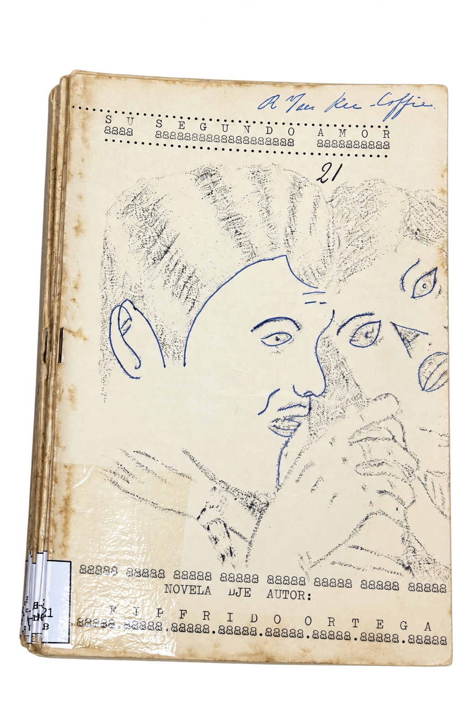
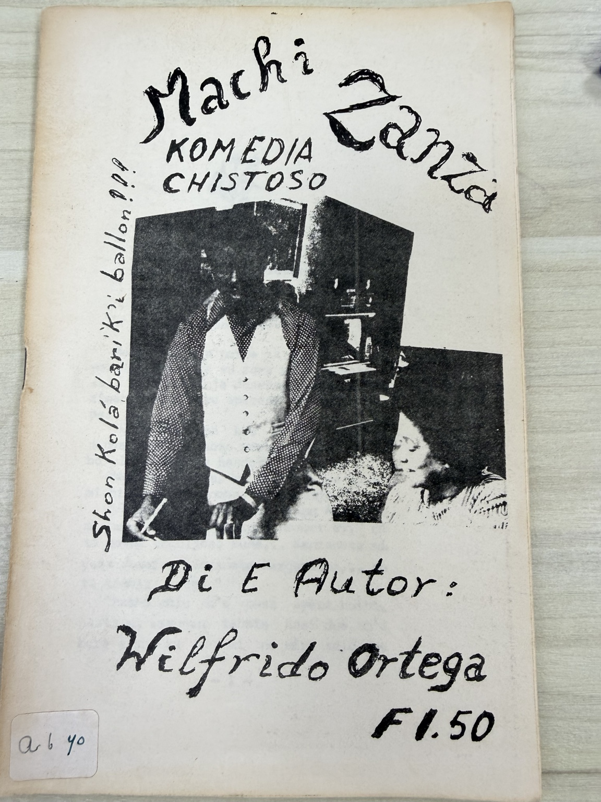
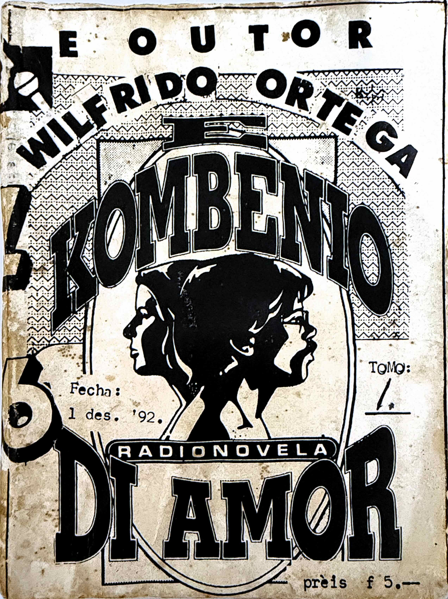

Su produktividat

Literatura
Wilfrido ta konosí pa su novelanan. Mayoria ta novela romantiko manera e mes a yamanan òf novelita instruktivo, òf novela historiko.
Durante e investigashon a deskubrí algun buki di poesia di Wilfrido. Den algun publikashon e tabata kuminsá ku un kantika. I aki aya por a topa ‘Kos di hari’, un chiste kórtiku komo ñapa.

Teater
Ta e novelanan el a transformá den obranan di teater. Guiermito di Shon trei, e Yonkuman ku brio ta dos teksto ku el a presentá komo obra teatral na Boneiru. Raphael Rodriguez ku a aktua den e obranan, a konfirmá esaki.
Na Kòrsou e ta tin mas ku un grupo, un di nan tabata yama AKRIDWO. E nifikashon di e abreviashon no ta konosí ainda.
AKRIDWO & BONADWO
Na Boneiru e ta tin e grupo ku el a yama BONADWO, Bon Aktornan Di Wilfrido Ortega.
Papi Adriana, Tio Ali i Boi Antoine, ta algun persona ku a aktua den mas ku un obra di Wilfrido Ortega.

Radionovela
Radionovela tambe tabata un adaptashon di novelanan ku Wilfrido a skibi.
El a transformá e novela E konvenio di amor ku a pasa na Radio Z86. Protagonistanan di e radionovela tabata: Gilbert Sparren, Chea Gummarus, Marisela Cratz, Crista Toppenberg, Suzy Adamus, Ludgarda Noor, Shardira Cijntje. Mildred Rooi, Norwin Leonora, Tom Toppenberg, Maruta Arindel, Lucienne i Anthony Elisa. Pietje Willems a nara e novela, Gibi Doran a interpretá e ‘jingle.
Originalmente a hasi uzo di e espasio na Fundashon Pro Bista pa por a graba e radionovela. David Ariza a asistí pa digitalisá e material pa a pase na radio.
E material no ta agregá komo audio na e testpagina aki.